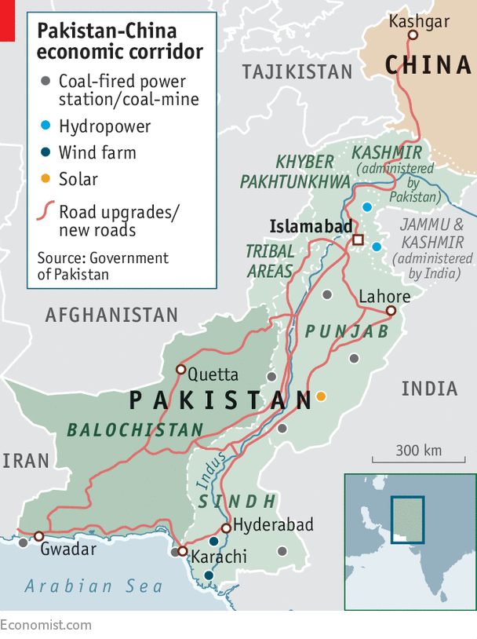

But the China-Pakistan Economic Corridor project carries risks
NEVER mind that the two countries’ slogan factory has always been based in China, or that it started off with some truly clunky products. What matters is that Communist China and Pakistan have a joint venture churning out declarations of friendship that date back almost to the two states’ respective founding, some seven decades ago. China and Pakistan have long hailed each other as “all-weather friends”, or “iron brothers” as close as “lips and teeth”. The mutual bond is, leaders from both countries affirm, “higher than the Himalayas, deeper than the deepest ocean, and sweeter than honey”.
And then, from China, come the lover’s gifts. Never has Pakistan been so wooed. The original promised dowry, of $46bn in Chinese grants and soft loans for infrastructure projects, has only grown, to $62bn. This munificence is dubbed the China-Pakistan Economic Corridor (CPEC), launched amid fanfare in 2015, on a visit to Pakistan by President Xi Jinping.
Most of the money is earmarked for power plants to improve Pakistan’s notoriously unreliable electricity supply. The rest is going on roads, railways, dams, industrial zones, agricultural enterprises, warehousing, pipelines and a deepwater port in the coastal settlement of Gwadar. Some of the promised money is bound not to materialise, and the claim by the interior minister, Ahsan Iqbal, of “benchmarking” Singapore and Hong Kong when turning remote, dusty Gwadar into a container-shipping hub speaks more of hope than experience. Yet over $14bn has already been spent. CPEC is very different from earlier schemes, when co-operation was promised only to run into the sands.
For Pakistan, the scale of ambition is unprecedented—a “game- and fate-changer” as overwrought locals put it. If CPEC gets electricity and goods flowing efficiently, then growth could jump by over two percentage points a year, by one estimate. Better yet, CPEC could shift the national narrative—too often dominated by coups, extremists and a chippy kind of nationalism—towards economic construction.
What is in it for China is often misunderstood, especially by Sinophobes in Delhi, Tokyo and Washington. They make much of the “corridor” in the plan, concluding that China’s chief aim is to gain access to the Indian Ocean, the better to encircle India. In fact, argues Andrew Small of the German Marshall Fund, an American think-tank, improving transport links through the mountainous neck of land that joins Pakistan to Xinjiang province in China’s far west is one of CPEC’s lesser aims. Yes, Gwadar, as a port on the Indian Ocean, interests the Chinese navy, but would have done so regardless of CPEC. Most of CPEC’s investments are aimed at improving Pakistan’s domestic economy.

China does have strategic motives, of course. A more dynamic Pakistan would certainly act as a counterbalance to the deepening security relationship between India and America, which also provides military aid to Pakistan. Then there is Islamist militancy, which spills back into Xinjiang; development might, as Li Keqiang, China’s prime minister, put it, “wean the populace from fundamentalism”. China needs new markets for its products, as well as new terrain for infrastructure and industrial projects. Most importantly, CPEC has become the main plank of Mr Xi’s ambitious “belt-and-road” initiative, whereby improved infrastructure will help to strengthen economic ties and thus spread China’s influence through Asia and beyond. As Mr Small points out, CPEC has to be seen to work for the broader scheme to seem both credible and appealing.
Even if CPEC is not the neo-imperialist exercise its critics make it out to be, it still has its flaws. The IMF warns that Pakistan may struggle to repay China’s loans, which could in turn prompt a balance-of-payments crisis. Pakistan’s central bankers have in the past deplored a lack of transparency surrounding CPEC contracts; suspicion abounds that Pakistani taxpayers have been shortchanged. And security is a problem. Just one example is the new Chinese-funded road to Gwadar, which runs through an area long gripped by insurgency in the remote, backward province of Balochistan. Mr Iqbal argues that the road and the development it is bringing will help extinguish the conflict. It might equally pour fuel on it, if locals feel excluded.
Human ties
In opinion polls, Pakistanis have high regard for the Chinese. A film released in April, “Chalay Thay Saath”, depicts a cross-border love story. It throws together—at a graveyard along the highway connecting the two countries—a Chinese man (played by a Canadian), whose father had worked as a road-builder in Pakistan, and a young Pakistani doctor on her way to visit her father in the far north. Despite the vicissitudes of landslides, family emergencies and communicating via a language app, the couple end up marrying.
In real life, most Pakistanis have never met a Chinese. That will change, as the number of Chinese residents swells from around 30,000 today. In Gwadar locals gripe about the tight security at the port, for the benefit of Chinese workers, who do all the construction and who keep to themselves. A politician complains that “they do not even buy a single needle in the market.”
In Islamabad, the Ni Hao (“Hello”) Chinese supermarket stocks pork, to the disgust of a Pakistani working there. He gripes that before long everything will come from China. Over the past year massage parlours have sprung up in swanky parts of town. Chinese women are starting to walk about the conservative capital in short skirts and shorts. As one local notes, “People are becoming very aggressive, saying, ‘What the fuck is that? This is a Muslim country.’” Pakistan’s elites may be enthralled by the idea that Chinese investment might make their country stronger, but among the masses, the romance has not really taken hold. The film, at any rate, flopped.